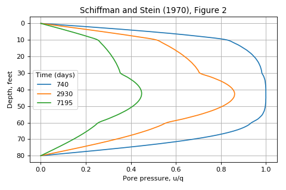

speccon example code: speccon1d_vr_4layers_vert_schiffmanandstein1970_Fig2.py¶
# speccon1d_vr example
# Vertical consolidation of four soil layers
# Figure 2 from:
# Schiffman, R. L, and J. R Stein. (1970) 'One-Dimensional Consolidation of
# Layered Systems'. Journal of the Soil Mechanics and Foundations
# Division 96, no. 4 (1970): 1499-1504.
from __future__ import division, print_function
import numpy as np
from geotecha.speccon.speccon1d_vr import Speccon1dVR
import matplotlib.pyplot as plt
# the reader string is a template with {} indicating where parameters will be
# inserted. Use double curly braces {{}} if you need curly braces in your
# string.
reader = """\
# Parameters from Schiffman and Stein(1970)
h = np.array([10, 20, 30, 20]) # feet
cv = np.array([0.0411, 0.1918, 0.0548, 0.0686]) # square feet per day
mv = np.array([3.07e-3, 1.95e-3, 9.74e-4, 1.95e-3]) # square feet per kip
#kv = np.array([7.89e-6, 2.34e-5, 3.33e-6, 8.35e-6]) # feet per day
kv = cv*mv # assume kv values are actually kv/gamw
# speccon1d_vr parameters
drn = 0
neig = 60
H = np.sum(h)
z2 = np.cumsum(h) / H # Normalized Z at bottom of each layer
z1 = (np.cumsum(h) - h) / H # Normalized Z at top of each layer
mvref = mv[0] # Choosing 1st layer as reference value
kvref = kv[0] # Choosing 1st layer as reference value
dTv = 1 / H**2 * kvref / mvref
mv = PolyLine(z1, z2, mv/mvref, mv/mvref)
kv = PolyLine(z1, z2, kv/kvref, kv/kvref)
surcharge_vs_time = PolyLine([0,0,30000], [0,1,1])
surcharge_vs_depth = PolyLine([0,1], [1,1]) # Load is uniform with depth
ppress_z = np.linspace(0,1,200)
tvals = [740, 2930, 7195]
show_figures=False
author = "Dr. Rohan Walker"
"""
# Run the speccon analysis
a = Speccon1dVR(reader)
a.make_all()
# Make a custom plot (alternately use "show_figures=True" in the input for
# generic plots)
fig = plt.figure(figsize=(6,4))
ax = fig.add_subplot('111')
ax.set_xlabel('Pore pressure, u/q')
ax.set_ylabel('Depth, feet')
ax.invert_yaxis()
ax.grid()
ax.set_title('Schiffman and Stein (1970), Figure 2')
lineObjects = plt.plot(a.por, a.ppress_z * a.H)
leg_title='Time (days)'
leg = ax.legend(lineObjects, a.tvals, title=leg_title, loc=6)
leg.draggable()
plt.tight_layout()
plt.show()
(Source code, png, hires.png, pdf)
{kind=link}
{kind=link}
